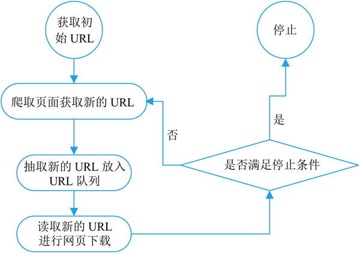

首页 > 编程笔记
什么是网络爬虫
在这个大数据的时代里，网络信息量变得越来越大、越来越多，此时如果通过人工的方式筛选自己所感兴趣的信息是一件很麻烦的事情，爬虫技术便可以自动高效地获取互联网中的指定信息，因此网络爬虫在互联网中的地位变得越来越重要。
本章将介绍什么是网络爬虫，网络爬虫都有哪些分类，以及网络爬虫的基本原理。
在生活中网络爬虫经常出现，搜索引擎就离不开网络爬虫。例如，百度搜索引擎的爬虫名字叫作百度蜘蛛（Baiduspider）。
百度蜘蛛，是百度搜索引擎的一个自动程序。它每天都会在海量的互联网信息中进行爬取，收集并整理互联网上的网页、图片视频等信息。然后当用户在百度搜索引擎中输入对应的关键词时，百度将从收集的网络信息中找出相关的内容，按照一定的顺序将信息展现给用户。
百度蜘蛛在工作的过程中，搜索引擎会构建一个调度程序，来调度百度蜘蛛的工作，这些调度程序都是需要使用一定算法来实现的，采用不同的算法，爬虫的工作效率也会有所不同，爬取的结果也会有所差异。所以，在学习爬虫时不仅需要了解爬虫的实现过程，还需要了解一些常见的爬虫算法。在特定的情况下，还需要开发者自己制定相应的算法。
通用网络爬虫在爬行页面的顺序要求上相对较低，同时由于待刷新的页面太多，通常采用并行工作方式，所以需要较长时间才可以刷新一次页面。所以存在着一定的缺陷，这种网络爬虫主要应用于大型搜索引擎中，有着非常高的应用价值。
通用网络爬虫主要由初始 URL 集合、URL 队列、页面爬行模块、页面分析模块、页面数据库、链接过滤模块等构成。
和通用网络爬虫相比，聚焦网络爬虫不会将目标资源定位在整个互联网中，而是将爬取的目标网页定位在与主题相关的页面中，极大地节省了硬件和网络资源，保存的页面也由于数量少而更快了。
聚焦网络爬虫主要应用在对特定信息的爬取，为某一类特定的人群提供服务。
增量式网络爬虫在爬取网页时，只会在需要的时候爬行新产生或发生更新的页面，对于没有发生变化的页面，则不会爬取。这样可有效减少数据下载量，减小时间和空间上的耗费，但是在爬行算法上增加了一些难度。
网络爬虫的基本工作流程如下：
本章将介绍什么是网络爬虫，网络爬虫都有哪些分类，以及网络爬虫的基本原理。
网络爬虫概述
网络爬虫（又被称为网络蜘蛛、网络机器人，在某社区中经常被称为网页追逐者），可以按照指定的规则（网络爬虫的算法）自动浏览或抓取网络中的信息，通过 Python 可以很轻松地编写爬虫程序或者是脚本。在生活中网络爬虫经常出现，搜索引擎就离不开网络爬虫。例如，百度搜索引擎的爬虫名字叫作百度蜘蛛（Baiduspider）。
百度蜘蛛，是百度搜索引擎的一个自动程序。它每天都会在海量的互联网信息中进行爬取，收集并整理互联网上的网页、图片视频等信息。然后当用户在百度搜索引擎中输入对应的关键词时，百度将从收集的网络信息中找出相关的内容，按照一定的顺序将信息展现给用户。
百度蜘蛛在工作的过程中，搜索引擎会构建一个调度程序，来调度百度蜘蛛的工作，这些调度程序都是需要使用一定算法来实现的，采用不同的算法，爬虫的工作效率也会有所不同，爬取的结果也会有所差异。所以，在学习爬虫时不仅需要了解爬虫的实现过程，还需要了解一些常见的爬虫算法。在特定的情况下，还需要开发者自己制定相应的算法。
网络爬虫的分类
网络爬虫按照实现的技术和结构可以分为通用网络爬虫、聚焦网络爬虫、增量式网络爬虫。在实际的网络爬虫中，通常是这几类爬虫的组合体，下面分别介绍。1) 通用网络爬虫
通用网络爬虫又叫作全网爬虫（Scalable Web Crawler），通用网络爬虫的爬行范围和数量巨大，正是由于其爬取的数据是海量数据，所以对于爬行速度和存储空间要求较高。通用网络爬虫在爬行页面的顺序要求上相对较低，同时由于待刷新的页面太多，通常采用并行工作方式，所以需要较长时间才可以刷新一次页面。所以存在着一定的缺陷，这种网络爬虫主要应用于大型搜索引擎中，有着非常高的应用价值。
通用网络爬虫主要由初始 URL 集合、URL 队列、页面爬行模块、页面分析模块、页面数据库、链接过滤模块等构成。
2) 聚焦网络爬虫
聚焦网络爬虫（Focused Crawler）也叫主题网络爬虫（Topical Crawler），是指按照预先定义好的主题，有选择的进行相关网页爬取的一种爬虫。和通用网络爬虫相比，聚焦网络爬虫不会将目标资源定位在整个互联网中，而是将爬取的目标网页定位在与主题相关的页面中，极大地节省了硬件和网络资源，保存的页面也由于数量少而更快了。
聚焦网络爬虫主要应用在对特定信息的爬取，为某一类特定的人群提供服务。
3) 增量式网络爬虫
增量式网络爬虫（Incremental Web Crawler），所谓增量式，对应着增量式更新。增量式更新指的是在更新时只更新改变的地方，而未改变的地方则不更新。增量式网络爬虫在爬取网页时，只会在需要的时候爬行新产生或发生更新的页面，对于没有发生变化的页面，则不会爬取。这样可有效减少数据下载量，减小时间和空间上的耗费，但是在爬行算法上增加了一些难度。
网络爬虫的基本原理
一个通用网络爬虫的基本工作流程，如下图所示：

图 1 通用网络爬虫的基本工作流程
图 1 通用网络爬虫的基本工作流程
网络爬虫的基本工作流程如下：
- 获取初始的 URL，该 URL 地址是用户自己制定的初始爬取的网页。
- 爬取对应 URL 地址的网页时，获取新的 URL 地址。
- 将新的 URL 地址放入 URL 队列。
- 从 URL 队列中读取新的 URL，然后依据新的 URL 爬取网页，同时从新的网页中获取新的 URL 地址，重复上述的爬取过程。
- 设置停止条件，如果没有设置停止条件，那么爬虫会一直爬取下去，直到无法获取新的 URL 地址为止。设置了停止条件后，爬虫将会在满足停止条件时停止爬取。
关注公众号「站长严长生」，在手机上阅读所有教程，随时随地都能学习。内含一款搜索神器，免费下载全网书籍和视频。

微信扫码关注公众号